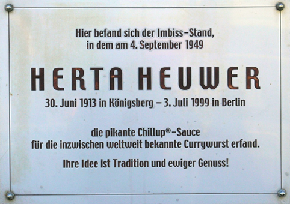
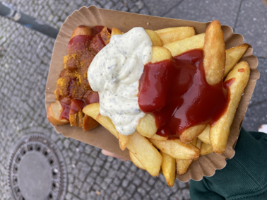

독일의 커리부어스트라는 음식, 들어본 적이 있는가? 커리부어스트1 는 독일의 길거리 음식 중 하나로 특히 독일의 수도인 Berlin, 베를린에서는 각양각색의 커리부어스트 점포들을 접할 수 있다. 사실 독일과 카레가루는 그리 어울리지 않는 조합이라고 생각한다. 많은 독일인들에게 후추조차도 매운 맛으로 간주될만큼 이들은 향신료에 그리 친화적이지 않기 때문이다.
실제로 겨자와 홀스래디쉬 소스를 제외하면 전통 독일 음식에서 향신료를 찾는 것은 쉬운 일이 아니다. 이러한 독일인들의 선풍적인 인기를 끈 커리부어스트는 과연 어떻기에 벌써 반세기 넘게 사랑받고 있을까? 가장 독일스러운 음식인 ‘소시지’와 가장 이국적인 향신료 ‘카레가루’의 결합인 커리부어스트의 탄생은 제 2차 세계대전 후로 거슬러 올라간다.
이 이야기는 2차 세계대전이 끝나고 그당시 서독과 서베를린을 통치하는 연합국이었던 영국의 한 군인이 카레가루를 가져오면서부터 시작된다. 대전 후 폐허가 된, 찢어지게 가난한 독일에는 많은 사람들이 빈곤에 허덕이고 있었고, 서베를린에 주둔한 연합군은 군용식량을 구호물품으로 서베를린 시민들에게 제공하였는데 그 중 영국군의 구호물품에 커리가 있었던 것이다. 오랜 기간동안 인도를 식민지배한 영국에게 커리는 친근한 향신료였기 때문이다. 그렇게 커리라는 향신료가 독일에 들어오게 된 것이다.
그러던 중 1949년 여름 서베를린 샤를로텐부르크2 지구3 의 카이저프리드리히 슈트라쎄4 모퉁이에서 스낵 가판대를 운영하던 헤르타 호이버 (Herta Heuwer)가 튀긴 소시지 위에 끓인 토마토 소스와 카레가루를 뿌리면서 커리부어스트가 탄생하였다. 당시 서베를린에는 전후 복원 작업을 위해 공사 작업들이 곳곳에서 진행되고 있었고 장시간 노동을 하는 노동자들이 많았다. 이들은 짧은 시간 안에 끼니를 해결할 수 있으면서 단백질도 보충할 수 있는 부어스트를 즐겨먹었다고 한다. 평소 즐겨먹던 소시지라는 익숙한 재료를 사용하였지만, 커리부어스트는 소스와 색다른 향신료 덕에 조금 더 식사 같은 맛을 낼 수 있었고, 그 때문에 많은 노동자와 시민들의 사랑을 받고 독일의 대표적인 ‘길거리 음식’으로 자리매김한 것이 아닐까 싶다.
커리부어스트는 주문시 두 가지 옵션으로 나뉜다. 바로 ‘mit5 Darm’과 ‘ohne6 Darm’. 이는 소시지의 원료들을 채워넣는 케이싱의 유무를 의미하고 흔히 생각하는 뽀득거리는 식감을 가진 소시지의 껍질을 말한다. 개인적으로 필자는 두 가지 종류 중 ‘mit Darm’ 소시지를 적극 추천한다. 특히 뜨거운 온도와 넉넉한 기름으로 거의 튀기듯이 요리하는 독일의 소시지 경우 mit Darm을 선택한다면 ‘Außen knusprig, innen saftig7 ’ 즉, 독일식 ‘겉바속촉’의 맛을 즐길 수 있을 것이다.
5 '~와 함께' 의 의미를 지닌 독일어 전치사마지막으로 필자가 커리부어스트의 본고장인 베를린에서 직접 먹고 뽑은 커리부어스트 탑 투를 소개해보겠다!
첫번째는, Wittenbergplatz역 KDW 백화점 옆에 위치한 Original Berliner Currywurst이다.
소스와 카레가루를 넉넉히 뿌려주기 때문에 커리부어스트 소스를 충분히 맛볼 수 있다고 생각한다. 직접 제작한 특제 토마토 소스와 카레가루로 뒤덮혀있는 카레소시지가 시작이었음에도 오늘날 소스 대신 케찹으로 대체하거나 카레가루를 그다지 많이 뿌려주지 않는 가게들이 많아졌다. 그런데 이 집은 직접 제작한 되직한 토마토 소스를 사용하기에 그런 걱정을 하지 않아도 된다. 또한 ‘Geschmorte Zwiebeln’을 사이드로 추가할 수 있는 것이 이 집의 특징인데 이는 완전히 카라멜라이징된 양파를 말한다. 맛있는 양파의 향이 커리부어스트와 정말 잘 어울리니 추가해서 꼭 드셔보셨으면 좋겠다.
두번째는, Friedrichstraße에 위치한 Witty’s-Die Bio Currywurst이다.
이 곳은 일단 Berlin Hauptbahnhof 베를린 중앙역 다음으로 접근성이 좋은 Friedrichstraße 역에 위치해있기에 언제든 생각나면 갈 수 있다는 점이 큰 장점이다.
커리부어스트는 감자튀김과 함께(mit Pommes) 파는 경우가 일반적인데, 베를린의 커리부어스트집 감자튀김 중에 가장 바삭하고 맛있다고 생각이 들어 적극 추천한다. 또한, 우리는 감자튀김에 케찹을 찍어먹는 옵션이 대부분이지만, 독일인들은 감자튀김에 케찹뿐만 아니라 마요네즈도 많이 찍어먹는다. 마요네즈 중에서도 특히 이 가게의 ‘knoblauchmayonnaise’ 즉, 갈릭마요네즈가 정말 맛있으니 바삭한 감자튀김에 찍어서 즐겨보시길 추천드린다.
커리부어스트의 탄생부터 특징들까지 알아보았다. 허름한 가판대에서 4유로 이내로 구매하여 맛 볼 수 있는 버전과 고급 레스토랑에서 약 25유로의 가격으로 와인 또는 샴페인과 즐길 수 있는 버전까지. 오늘날 우리는 다양한 공간에서, 다양한 가격과 형태로 커리부어스트를 만나볼 수 있다. 물론 고급 레스토랑에서의 커리부어스트도 좋지만, 가판대에 서서 호호불며 시원한 맥주와 함께 즐길 때가 가장 ‘커리부어스트’다운 선택지가 아닐까 싶다.